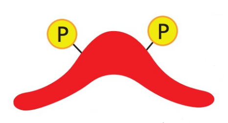
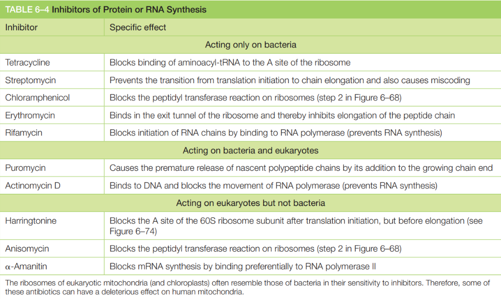

אהלן חברים, שמי אביחי 👋
חשבתי שזה יהיה נחמד לסגור מעגל עם שנה מעניינת שעברתי בין יולי 2025 ליולי 2026, עם דגש רב על היבט הקבלה ללימודי רפואה בישראל (המסלול הארבע-שנתי).
הסיבה שאני קורא לזה ״יומן דרך״ היא כי זה משהו שאני מנסה למסמר לעצמי בראש – להיות רופא מומחה (ואני מניח שרוב מי שיקרא את זה שואף להכשרה הזו) זה סיפור של 10 שנים +-.
לכן לדעתי יותר נכון ונבון למסגר את התהליך הזה בראש כדרך: משהו רציף אך גמיש, פלואידי, שיכול להשתנות (ורצוי גם, שכן אם הדרך הייתה סטטית... כנראה שהיא לא הייתה ממש מעניינת או מועילה).
רוצים לצלול ישר לטקטיקה?
במקרה שלא מעניין אתכם יומן הדרך ובא לכם לדלג ישר לבשר ולטיפים:
הסקופ הכי חשוב: חשיבה ביקורתית
אני אתחיל מהסוף ואתן את הסקופ הכי חשוב: הדבר הכי חשוב שלמדתי והפנמתי בשנה האחרונה הוא שהכישור הכי חיוני וקריטי לחיים טובים ובפרט לקבלה לרפואה הוא חשיבה ביקורתית.
אם תיקחו איתכם דבר אחד מהחפירה שעומדת לבוא, הלוואי שזה יהיה זה.
״למה אני חושב שחשיבה ביקורתית (או קריטית) זה הדבר הכי חשוב שיש? הגעתי למסקנה שזה המונח או התהליך הכי בסיסי שמזקק ומכיל בתוכו את כל מה שצריך לדעת כדי להצליח בחיים, ובפרט בקבלה לרפואה. זה קצת מזכיר לי את הסיפור עם הלל במסכת שבת, שביקשו ממנו ללמוד ״את כל התורה על רגל אחת״ והוא השיב:
״מה ששנוא עליך לא תעשה לחברך, זוהי כל התורה כולה, והשאר רק פירוש שלה – לך תלמד״.
אני חושב שבנאדם שחושב ביקורתית טומן בחובו את הפוטנציאל להבין ולפעול בצורה אינטואיטיבית ככה שהוא יחיה חיים טובים בעצמו ועם הסובבים אותו. וגם אם הוא לא מבין או פועל כמו שהוא היה רוצה כרגע, יש לו את הכלים לפעול כדי שזה כן יהיה המצב.
(זה הזמן לציין שאני לא מתיימר לטעון שזו הדרך האופטימלית לפעול או לחיות לפיה, זו סך הכל החוויה שלי שאני משתף. ״ואהבת לרעך כמוך״ וכ׳, אגב אני לא בנאדם דתי 🤡).
הרקע שלי: בלי שבריר של ביולוגיה
אני אנחית על הקרקע את הנאמר עד כה ביחס לקבלה ללימודי רפואה: ללמוד איך ללמוד היה לי סופר חשוב, כי לא למדתי שבריר של ביולוגיה או כימיה בחיים וזה מאוד הקשה עליי בהתחלה. בסוף, מה שעשיתי כדי לעשות לעצמי קצת ראמפ-אפ ולהיכנס לעניינים זה להיעזר בפלייליסט המעולה הבא:
פלייליסט יוטיוב פנומנלי להתחלה. המלצה שלי: התמקדו בעקרונות ופחות בחישובים המורכבים.
סמסטר הקיץ בהדסה: סופי, ברכי וטבילת האש
סביבות מאי-יוני 2025 תסביך ה״אני רוצה להיות רופא״ נכנס להילוך טורבו אצלי, וביררתי מה מי מו. הגעתי למסקנה עם עצמי שאני רוצה לגעת בחיים של אנשים, וההשלכות של תעסוקה כרופא הרגישו לי הדבר הנכון לעשות – לא רק בגלל העבודה עם אנשים, אלא גם בגלל העומק שיש בתחום הזה לצד האנושיות. גיליתי בעצמי תשוקה רבה להשפיע על חיים של אחרים ולהיות life-long learner בתחום שאני מרגיש שאני יכול לצמוח ולהתפתח בו, והחלטתי שאני מוכן לעמוד בקשיים שההכשרה מביאה איתה. משם עברתי לפרקטיקה: הגעתי למסקנה שאולי באונ׳ ת״א אותה אני מכיר ואוהב אפשר להשלים את קורסי הליבה, אך באותה תקופה הם דרשו מלא קדמים – ובמקום להשלים 6 קורסים (סטטיסטיקה כבר למדתי בתואר הקודם), זה הסתכם לבערך כפול מזה.
אחרי שהתבאסתי שפספסתי את המועד להירשם לקורסי הליבה באריאל כי הבנתי שיותר קל לעבור שם את המבחנים, ניגבתי את הדמעות ונרשמתי למה שהיה זמין בסמסטר הקיץ בהדסה: ביולוגיה מולקולרית עם ברכי ופיזיולוגיה עם סופי.
זה ביאס אותי בהתחלה כי הבנתי שההמלצה הרווחת היא להתחיל עם ביוכימיה וביותא, אבל החלטתי שכוסומו – אני מתחיל וזהו, אין זמן לרעשי רקע, צריך לזרום. ותודה לאל שעשיתי את זה. היום אני חושב שבהינתן האפשרות כנראה עדיף להתחיל מביוכימיה וביותא, אבל אם התנאים לא מאפשרים – הכל טוב, זרמו!
את המשך הקורסים לקחתי ככה: ביוכימיה עם סופי וביותא עם אילנה בסמסטר א׳ כי זה הרגיש לי הכי קוהרנטי לסיים עם הקורסים שבסילבוס של הידע לפני הידע, ומיקרוביולוגיה עם אילנה כספי וגנטיקה עם הדר.
ביותא זה מבחן מלחמה אין ספק, וביוכימיה מלבד כל מיני טרלולי סוכרים שסופי אוהבת (ואני אישית מאוד אהבתי כי זה חיזק לי את הידע ואת האינטואיציה בנושא) הידע מוכל לחלוטין בסילבוס של הידע ושווה מאוד לדעת טוב את החומר בקורס (ולדעת לחשב מטען לפפטידים בלי להתחרפן או להתבלבל בזה!!!). מיקרוביולוגיה וגנטיקה הרבה יותר סבבה.
האויב הכי גדול של הטוב הוא המצוין
טוב התחיל הקורס, הכרתי אנשים מהממים איתם אני בקשר עד עצם היום הזה, וניסיתי להיות הסטודנט הכי טוב שאני יכול. חזרתי על ההרצאות, ובעיקר ציירתי הרבה גרפים מהסוג שביוטיוב קוראים להם Mind mapping (אצלי זה היה הרבה יותר ורבוסי, אבל עדיין בכיוון הנכון).
תזכורת קריטית:
דברים לא צריכים להיות מושלמים כדי לעבוד! לא חייב להיות בריכוז שיא, לקיים שגרת בוקר אופטימלית, להתאמן 17 פעם בשבוע, להכפיל את מינון האטנט ולעשות שיטת פומודורו.
5 עד 10 הדקות הראשונות כשמתיישבים ללמוד הן הכי קריטיות עבורי – פשוט ״להיכנס לשוונג״.
אוגוסט: כרטיסיות, אלמוג ו-Familiarity
איפשהו באוגוסט החלטתי שזה רעיון טוב שאירשם לקורס של אלמוג לקראת מבחן הידע. הכרטיסיות נראו מהממות, והסיפור של Spaced Repetition ו-Active Learning נשמע סופר חשוב.
נרשמתי. קרסתי מהר מאוד אחרי שהכרטיסייה על מחלת השינה האפריקאית גרמה לי לישון על האף... הבנתי שאני חייב משהו שיעזור לי להגיע קודם כל לרמת Familiarity עם החומר. כלומר: לראות מילים כמו ATP, אנתרופיה, אנזים, מיטוכונדריה, אשלגן, סידן – מבלי להרגיש שאני עומד להתעלף.
מחלת השינה האפריקאית
מהו המנגנון המולקולרי המרכזי שבאמצעותו הטפיל (Trypanosoma) מתחמק ממערכת החיסון של המאכסן?
הצילווווווווווווו
אז השוויתי בין רפואה בנשמה לבין ביוכימיה פלוס. מחשבון הבדידים שעשיתי הראה שיש יותר שעות וידאו ברפואה בנשמה – אז יאללה, נרשמתי. וזה באמת הביא אותי לאן שרציתי: הבנתי את ה״חלק הארי״ של החומר (זה ששואלים עליו הכי הרבה בשחזורים), ואז הרגשתי שסוף סוף אפשר להתחיל ״לשנן״.
הטוויסט: פאוזה מנהלתית והחלטה להקדים ל-2027
לא תכננתי לגשת לידע ב-2027. משיקולים כלכליים, עומס הלימודים לצד העבודה, ותוכניות להרחבת המשפחה – תכננתי להתחיל לימודים מאוחר יותר ולגשת לידע רק ב-2028.
אבל חבר יקר גער בי להירשם כבר ל-2027 ו״מקסימום להצליח״. נרשמתי רק לאריאל (לא רציתי לבזבז אחת מ-3 ההרשמות המוגבלות לתל אביב). בסוף קיבלתי ציונים שפתחו את הדלת:
הסיבה אולי הכי גדולה מסט הסיבות שבגינן לא רציתי תחילה לגשת למבחן הידע ב2026 היא שאני תוך כדי צריך לג'נגל את קורסי הליבה ובנוסף זה שאני עובד במשרה דיי תובענית.
בלי חארטות – המחיר האישי והנפשי:
היו ימים שקרסתי תחת הלחץ של קורסי הליבה, מבחן הידע והעבודה.
ברטרופרספקטיבה אני לא ממליץ על זה לאף אחד ואני שמח שאני והזוגיות שלי יצאנו מזה בריאים נפשית ופיזית. המסלול הזה לוקח אותך רק ברמת ההכשרה 10 שנים קדימה – להתחיל שנה מוקדם יותר ולהסתכן בהתקף לב מלחץ ובשחיקה מיותרת זה רעיון פחות מוצלח. לעשות את הקורסים ולגשת למבחן בנחת אחר כך זה רעיון הרבה יותר שפוי, לדעתי :).
ציר הזמן של השנה
חלוקת השנה לפי סמסטרים ושלבי המיון
סמסטר קיץ
תחילת השלמת קורסי הליבה בהדסה (ביולוגיה מולקולרית ופיזיולוגיה) והשלמת בסיס בכימיה.
סמסטר א׳
המשך לימוד קורסי הליבה במקביל לעבודה במשרה מלאה.
סמסטר ב׳
המשך וסיום קורסי הליבה.
הג'וס: טיפים וטקטיקה
הכלים, השיטות והדברים שתכלס עבדו לי
הכלי המנצח: אלמוג כ״אינדקס״
בחלקים היותר מאוחרים של הלמידה ניסיתי לחזור לכרטס עם אלמוג – לאו דווקא דרך האלגוריתם, אלא בטריק שעבד לי מדהים: חיפוש של שלושה רווחים (״ ״) בפרק ספציפי בספר כדי לכרטס את כל החבילה בבת אחת.
הדבר שהכי עזר לי היה שימוש באלמוג כ-אינדקס: מקלידים מילה ומגיעים לכרטיסיות שעברו וריפיקציה קפדנית, כולל סיכומים מעולים בתחתית. אם יש מישהו שמגיע לו שבח בכל התהליך הזה – זה לאלמוג ולצוות האתר. הכלי הכי מתקדם שיש לסטודנטים ב-4 שנתי בארץ.
תרגול שאלות אמריקאיות: להפוך את זה לאקטיבי
עשיתי מלא מלא מלא שאלות. לקחתי את כל השאלות שיכלתי לפי פרק בספר באלמוג ולפי שיעור ברפואה בנשמה ועברתי את כל החומר ככה ב2 הפלטפורמות ופתרתי את כל השאלות שהצלחתי לשים עליהן את הידיים. מכיוון שמבחן הידע הוא מבחן אמריקאי, חשוב מאוד מאוד מאוד לדעתי לתרגל שאלות אמריקאיות. זה תהליך שהוא יכול להיות מאוד אקטיבי, בדגש על היכול. אם סתם מסמנים בלי לחשוב זה לא עוזר. השיטה שלי היא כזאת:
-
•
בשאלות ״אינדיקטיביות״ – כאלו ששואלות שאלה שאתה might as well לענות עליה כשאלה פתוחה פחות או יותר, הייתי מנסה לעשות בדיוק את זה. לנסות להבין את כוונת המשורר ולהבין מה התשובה. זה עזר לי להגיע למסיחים בלי bias, כי לעיתים המסיחים בשאלות גורמים לך למשוך את השיערות מעצבים. זה כמובן לא עובד על כל השאלות אבל לאלו שכן, שווה לנסות.
-
•
בשאלות שיש כל מיני ״שינויים״ של דברים – נגיד ״רמה גבוהה״ או ״ריכוז נמוך״ ודברים כאלו, הייתי מדגיש לעצמי עם סימנים של
+ו--מעל ה״גבוה״ או ה״נמוך״ או נגיד=עבור ״זהה״. מאוד מאוד עוזר בשאלות מציקות בפיזיולוגיה.
לקראת מועד ב׳ נרשמתי גם ל-MedExams – אחלה פלטפורמה לשאלות של הידע עם הסברים מעולים (וזה שהציון במועד ב׳ היה פחות טוב זה לגמרי עליי).
״שינון״ לעומת ״הבנה״
אני שמתי לעצמי מטרה והבטחה לא להשאיר לידי מפלצת ה״שינון״ כל דבר שאני יכול ״להבין״ אותו.
אני אתן דוגמה. אם לוקחים את כל החומרים שמשפעלים ומדכאים כל מיני תגובות בכל המטבוליזם בביוכימיה, בעיקר מקבלים דיכאון. לא שזה לא אפשרי, אבל פרקטית, כשתרגלתי שאלות, שמתי לב שלא מפילים בין מסיחים שהם ״הגיוניים״. אני אתן דוגמה:
נגיד תגובה 10 בגליקוליזה, האנזים היקר והאהוב פירובט קינאז, לוקח PEP שמת מת מת להתפרק לפירובט (שגם לו יש את ה-2 צורות שלו לדעתי... אף פעם לא זכרתי את זה) ו...מפרק אותו לפירובט. יש לתגובה הזו מלא חומרים שמשפעלים אותה, Aלנין, ATP, FFA, אצטיל-קוA ובקיצור כל ה-Aים.
הרגשתם משהו מוזר? אם אתם שוחים בחומר אולי :) וגם אם לא אז לא נורא:
תזכרו חברים שגליקוליזה מתרחשת במצב שובע בכבד ובמצב אנרגטי נמוך בשאר הרקמות.
נתתי לכם פה רשימה של אינדיקטורים של אנרגיה גבוהה: ATP, FFA, אצטיל-קוA (שיוצא מהמיטוכונדריה כציטראט ומתפרק חזרה בציטוזול כשמעגל קרבס רווי, או מצטבר מפירוק שומנים), Aלנין שבריכוז פירובט גבוה יהפוך ל-Aלנין...
בקיצור אלו דווקא יעכבו אותה.
נעבור על שארית החומרים שקשורים לתגובה הזו:
- F 1,6 BP שמשפעל אלוסטרית כחלק מ״משוב חיובי״ של הגליקוליזה משלבים מוקדמים.
- זרחון של PKA (רק בכבד לדעתי) שמעכב ודה-זרחון של PP כלשהו (גם רק בכבד לדעתי).
מה אני בא להגיד פה?
ברוב השאלות שאני ראיתי לא ישימו מסיחים שהשם ישמור לשאלה ״מה ישפעל את פירובט קינאז?״:
- F 1,6 BP (רק בכבד)
- גלוקוז-6-פוספט
- אלנין (רק בכבד)
- F 1,6 BP (רק בשריר)
- F 1,6 BP
- ריכוז ATP גבוה
- אלנין
- אצטיל-קוA
ואז להבין מה כל מולקולה ״מייצגת״ ומה המשמעות שלה ומתי היא בריכוז גבוה או נוצרת וכ׳ מספיק כדי לענות על השאלה.
וכמובן אפשר פשוט לשנן את הכל ולשכוח את מה שאמרתי :)
אבל פה נתתי אנקדוטה שהיא אולי אפילו יחסית קלה לשינון, בתכל׳ס על פני כמה חודשים הכל אפשרי, אבל כשמותחים את זה על כל החומר, לדעתי – עדיף לנסות להבין מאשר לשנן, את מה שאפשר להתחמק איתו לפחות :) אני ממליץ לפעול איך שמרגישים ולעשות לעצמכם הרבה קליברציה עם סימולציות ושאלות. בסוף אם אתם מבינים מה מדברים איתכם בשאלות – זה אינדיקטור טוב, ואם לא – תשקלו איך לפעול בהמשך.
פרק 19 בביותא – התרגומים של אלמוג
אני מקדיש סקשן שלם לפרק הארור הזה. אני לא יודע מאיפה להתחיל בכנות, אני חושב שהדרך שבה הוא מוצג בספר היא מזעזעת בעיניי, ושהדבר היחיד שעזר לי פה זה לפתור מלא שאלות ולשנן בלי סוף עד שבסוף דברים קצת התחברו לי, ואז שואלים אותי על דקורין במועד א׳ שה׳ @$#@*# אותם.
בכנות הכלי שהכי עזר לי פה זה התרגום של אלמוג – זה כלי עוצמתי, שמוריד את מחסום השפה, קטן ככל שיהיה (בסוף זה תחום חדש לרוב האנשים, וגם אם אני מבין אנגלית ממש טוב זה עדיין יותר יעיל לדעתי, ודאי מפאת איכות התרגום הנפלאה).
ויותר מזה – בסוף הפרק יש תמיד מילון של כל השחקנים בפרק. למינה בזאלית שמאזלית, דקורינים, קולגנים, אלסטינים, you name it – זה שם.
סרטונים ביוטיוב – דריל דאון
את זה הבנתי מאוחר מידי לדעתי. כשיש לכם דברים שלא מתחברים – קפצו ליוטיוב, לא להיבהל, צפו בסרטון או שניים (או שכותבים שתיים?).
נגיד ביחס לבועיות שזזות בתא בין הממברנה ל-ER לגולג׳י זה ממש יכול לעזור, וחשמל שזורם בסינפסות, חומרים שעוברים פארה או טראנס צלולרית, או כל דבר אחר שאתם תידפקו עליו.
שיטת פיינמן – ״לימוד עצמי״
מתישהו אני חושב שנתקלתי באיזה משפט כזה ואני דיי בטוח שזה קשור לשיטת פיינמן (מוזמנים לחקור קצת) וגם אם זה לא קשור הנה המשפט שאני מאמין בו: ״אם אתה לא יודע להסביר משהו בקוהרנטיות ובפשטות לילד בן 6, כנראה שאתה לא מבין אותו״, ולמטרות יותר פרקטיות אפשר להרחיב את המשפט ל״מבין אותו מספיק כדי שתוכל להשתמש בו בצורות חדשות ומגוונות שהן לא שחור על גבי לבן מה שאתה מדקלם מהמקור שלמדת ממנו״.
כדי שדברים יחלחלו חברים, אין מנוס – כדאי וצריך לשבור את הראש. אם זה קל זה לא אפקטיבי (ככל הנראה, ושוב – לדעתי).
השיטה הספציפית שהכי הייתי אוהב לממש בה את העיקרון הזה, היא brain dumping לתוך הצ׳אט, לפעמים עם רפרנסים אבל בתכל׳ס מהניסיון שלי (לפחות עם Gemini, ה-AI שאני הכי מחבב ביולוגית והאמת בכללי) – לא באמת צריך רפרנסים. (האמת שזו בדיוק השיטה שיצרתי את הבלוג הזה איתה – brain dump לצ׳אט ורק ביקשתי שיסדר את זה יפה באתר :))
״תקשיב אני עכשיו הולך לספר לך את כל מה שאני יודע על מחזור התא בקורס ביותא. CDKים, שלבים שונים, הכפלה, CKIים, MAD2, APCC, הכל. אני אספר לך את הכל לפי הסדר שאני זוכר ומבין, תתקן אותי ותוסיף פרטים שאולי פספסתי״
ומשם ממשיך לזמר את כל מה שאני יודע על שלב G1 ו-S ו-G2 וכל דבר שאני נזכר בו ורושם ורושם ולפעמים זה היה לוקח לי גם חצי שעה ושעה לכתוב פרומפט. וכמובן שאף פעם לא שכחתי לציין, להסביר ולפאר על החלבון האהוב עליי – רטינובלסטומה הצפרדעון הזו (אולי כי הוא תמיד ממש הזכיר לי את החתול שלי צ׳יקמוק):

ומה עשיתי פה?
שלפתי או כפי שאני מעדיף לספר לעצמי ״המצאתי״ מידע מהראש. זה מאוד שונה מלקרוא משהו ולהבין אותו, וגם מלקרוא שאלה ולזכור ולהבין את האלמנטים שהיא מערבת בתוכה. זה ממש כמו ליצור יש מאין לדעתי ובגלל זה אני אוהב את המילה ״להמציא״. אני לא מספיק פילוסוף כדי להסביר בדיוק למה זה תהליך כל כך יותר טוב לדעתי משאר הדברים שאפשר לעשות (בכנות אם יכולים להסביר או ללמד ככה את כל החומר כנראה שתצליחו בכל השאלות לדעתי) – אבל כשיש דברים שאתם מוצאים לנכון למסגר כסיפורים (הרבה פעמים בביותא ובמולקולרית, והאמת שגם פחות או יותר כל המטבוליזם בביוכימיה) – אני מאוד ממליץ להשתמש בזה.
״קיצורים״
חברים יש כל מיני נקודות בחומר שהן כל כך מזעזעות שאתם צריכים לגרום לעצמכם שזה יהיה בלתי-אפשרי שתפקששו את זה. אני אתן דוגמה – לזכור את האנטיביוטיקות השונות במולקולרית.
הטבלה הזו הרסה לי את הבריאות בכנות:

אחרי תקופה מסוימת נתקלתי בשאלות לגביה וראיתי שבעיקר שואלים ״איזו אנטיביוטיקה תשפיע על בקטריות?״ ואז מביאים 3 שמשפיעות על אאוקריוטים ו-1 על בקטריות.
ובקיצור, זה פיקס אותי על החלוקה הבאה:
ושימו לב שיש גם כמה שם שמופיעות בטקסט מסביב לטבלה הארורה.
החרטוט שהשתמשתי בו, שבשום פנים ואופן לא מאפשר לי לטעות בשאלה שקשורה לאנטיביוטיקות הללו, זה המשפטים הבאים:
״טטרה אריתמטית התלבשה ספקטיקל ולקחה סטרפטיקול פעמיים משהו כולרה״
״חריף האקטין האמיתי״
״הארי אני ציקלופ״
ואת פורומיצין ואקטינומיצין D הייתי זוכר בנפרד שהן בקטגוריה של ״גם וגם״ – תוקפות גם באאוקריוטים וגם בבקטריות (כשפורומיצין תוקפת את הריבוזום, ואקטינומיצין D תוקפת את ה-RNA Pol).
עוד ג׳וס בדרך... 🎃
המשך הפירוט הטקטי (אסטרטגיה מפורטת למבחני הידע, תחנות המס״ר ואיך שורדים את זה מנטלית) עובד ונכתב ברגעים אלו.